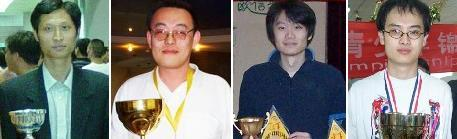
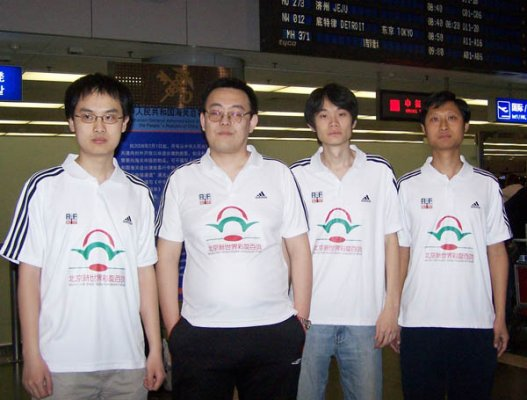
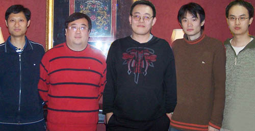

第七届连珠世界团体赛选手陈伟妻子博文
#1 第七届连珠世界团体赛选手陈伟妻子博文 作者：有志青年 发表时间：2008-4-30 19:48:44
今天凌晨3点多，我和陈伟才睡了3个多小时，就爬起来开始准备去机场奔往芬兰，4点整我家小福克斯就拉上曹东、吴镝和姚老师出发了。老公说我和姚老师真不容易，这么早陪着他们去机场，我说你们一定要拿个好成绩回来，我还会去接你们的，而且我从现在就开始设想着中国队拿冠军的样子了。
两年前的五一，陈伟、吴昊、朱剑锋、葛陵锋4人到俄罗斯比赛，取得了第三的成绩，这一幕仿佛就发生在昨天。当初我还做了点好事，帮他们联系了新浪、搜狐全程报道。两年后的今天，我随便看了下新浪，已经有很多关于比赛的消息了，有叶子和周同学的大力支持，真是发展得越来越好了，这次比赛信息可以最快时间发回来了。
这次比赛中国队派的陈伟（领队）、吴镝、曹东、吴昊（从左至右顺序），实力巨强，照片如下：

陈伟：中国参加国际比赛最多的选手，战绩多得说不过来了，世界排名47，八段（不知道什么时候又升段了），这次打第四台，被我笑话了，我说：两年前您还第一台呢，他说:大家都进步了，这才说明中国队实力强了呢！我说：那绝不允许你输棋。
吴昊：上次的团体赛最佳第二台，世界排名28，六段。2006年“上海名人邀请赛”季军，2006年5月第六届连珠世团赛季军，同时获得最佳二台的表彰。
曹东：国内取得第一名最多的棋手，世界排名第16，六段。在2007年“京沪擂台赛”豪取六连胜，2005、2007两届全国赛冠军。
吴镝：第十届世界连珠锦标赛A组冠军，世界排名第7，六段，2007年首届全国五子棋锦标赛男子组亚军。
希望他们这次可以精诚团结，再创佳绩，干掉小日本的，PK掉目前的世界冠军—俄罗斯队。 这是今早5点机场出发前拍的合影，(这赞助商这次定赚发了)

下面引用那老师的一段话：（附照片）
北京奥运在即，做为一个中国人对于奥运精神“更快、更高、更强”的理解就是在深厚的爱国主义精神基础上，顽强，拼搏，无私奉献的精神，面向世界，博览众长的精神。做为一个中国五子棋爱好者，弘扬奥运精神也是义不容辞。在世界连珠舞台上虽然我们还不能享受国旗国歌的荣耀，但我们还要坚持努力克服重重困难参与世界。
如果说在技不如人的九十年代中期，我们以三人不整的阵容参与首届世团赛是出于热血和激情的话，那么，在2006年，四位棋手克服重重困难，自发组队远赴异国参加第六届世界连珠团锦标体赛，勇夺得团体赛季军，则在世界连珠的舞台上，展现了十年磨一剑后中国连珠的强大的实力和对连珠境界的执着追求。
2008的今年，虽然中国五子棋的发展处于徘徊期，但有奥运激情的冲动，又有北京新世界彩旋百货出资；那小嘴文化公司相助；国际连珠联盟中国事务部、那威连珠五子棋俱乐部组织；新浪棋牌、中国连珠网宣传，再加上占世界连珠人口80%的中国五子棋爱好者的支持，我们更有勇气组成最强阵容，出击第七届世界连珠团体锦标赛。
这次我们组建强大整齐的阵容参赛，还肩负另一项重大使命，就是推动国际连珠联盟加入世界单项体育联合会，进而使五子棋进入世界智力运动会。
我们不仅要充分展示中国五子棋的水平，还要宣传北京奥运，我们的目标：保三争冠！口号是：参与世界，迎接奥运！

老公能将自己的爱好做出如此成绩，不容易，我什么时候也能把爱好做的如此精专阿？我有什么特长阿，突然间有点想不起来了，可能因为都不值得一提吧。
前几天看大灌篮，感觉这部电影真是拍得太好了我都笑翻了，中国功夫太神奇了。借此预祝我们中国队这4位大侠们可以取得好成绩！中国人最棒！
[文章来源：晓宇博客]
#2 Re:第七届连珠世界团体赛选手陈伟妻子博文 作者：掌棋宣传员 发表时间：2008-4-30 21:15:49